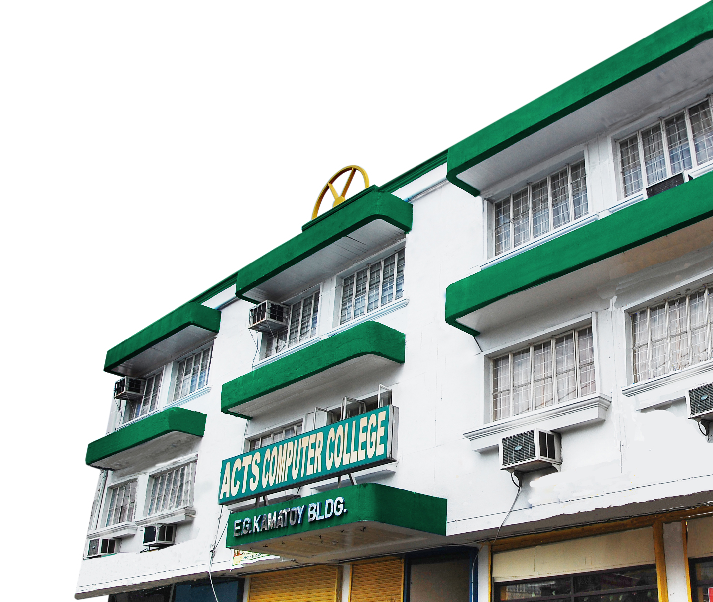

Senior High School
Four specialized strands to explore your strengths, sharpen your skills, and prepare for what comes next.
STEMICTABMHUMSS
From pioneering computer education to preparing the next generation of learners — your journey toward greater possibilities starts here.

ACTS Computer College began as Santa Cruz, Laguna’s first computer school — a place where opportunity met innovation.
Established in 1987, ACTS started with short courses in programming and office applications. By 1990, it expanded to two- and three-year technology-focused programs, helping lay the foundation for a growing academic community.
Four specialized strands to explore your strengths, sharpen your skills, and prepare for what comes next.
Study programming, algorithms, and how software systems are designed.
Learn to build, deploy, and support applications, networks, and IT systems.
Develop teaching skills for technical and vocational subjects through lesson planning and hands-on instruction.
Explore how businesses operate through management, marketing, finance, and operations.
Learn how accounting and technology work together to record, manage, and report financial information.
Learn to identify business opportunities, test ideas, and plan a new venture.
Build skills in office operations, business correspondence, records management, and administrative support.
Our mission points toward a community shaped by learning, service, and holistic development.
Education that connects knowledge, practical learning, and lifelong curiosity.
Developing not only capable learners, but also responsible and caring individuals.
Preparing students to navigate new opportunities and an ever-changing world.
Discover the place, people, and spirit behind ACTS Computer College — a school with deep local roots and a commitment to growth.
Open in Google Maps →Learn about our academic pathways, history, and the community we're proud to be part of.